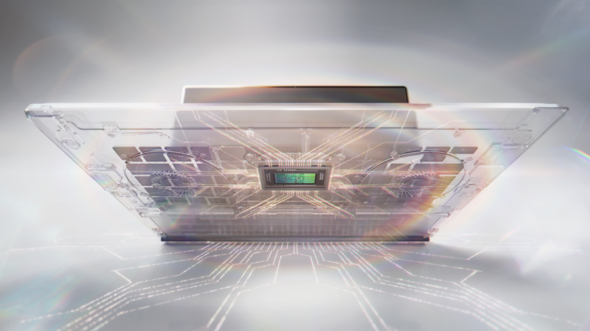
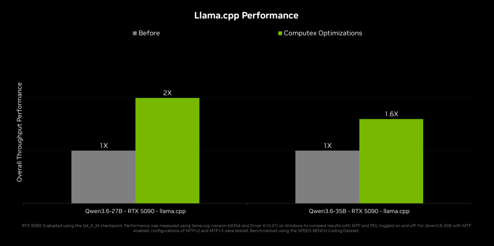

PPT Deep Search · Source Understanding Review
RTX Spark 更像 Windows 本地 personal-agent stack 的锚点，而不是单纯高 TOPS AI PC
面向技术架构 / AI engineering leaders，当前证据支持把 RTX Spark 放进“本地 personal agents 的硬件、Windows trust layer、OpenShell policy/runtime、CUDA/RTX 生态”组合里评估；但“Agent 原生电脑 / 老黄重新发明 PC”应当作为中文转述处理，不能替代 NVIDIA 和 Microsoft 的官方措辞。14
新意在平台组合，不在单个规格数字
官方材料最强的可用判断是：RTX Spark 是 personal-agent Windows PC 的平台锚点；不是已经被独立验证的成熟新品类。
这意味着 deck 的顶层判断不宜写成“全球首个 Agent 原生电脑已经成立”。更稳的表达是：RTX Spark 把 AI PC 的评估问题从 TOPS/spec sheet 推到“本地 personal agent 是否能在主力 Windows 设备上安全、私密、持续运行”的平台问题。
本地 personal agent 的瓶颈是完整运行环境，不只是推理速度
如果 agent 要在用户主力 PC 上跨应用执行任务，架构问题同时包含算力、内存、权限、隔离、策略和云路由。

它填的是普通 AI PC 与 DGX 工作站之间的 personal-agent 空位
RTX Spark 的相邻路线不是只有 Copilot+ PC；还包括 cloud agent、Windows 365 dev environments、DGX Station for Windows 与 DGX Spark。
普通 AI PC / Copilot+ PC 路线
- 一句话定位
- 把端侧 AI 能力放进 PC 体验，偏系统 API、轻量模型和日常功能。
- 核心机制
- Microsoft Build Live 提到 Windows AI APIs 扩展到更多硬件，Aion 1.0 Plan 是计划进入本地设备的 14B reasoning/tool-calling model。4
- 适用边界
- 适合日常 OS intelligence；不等价于承载 120B-class local personal agents。
- 与 RTX Spark 关系
- RTX Spark 是更重的 local-agent compute tier，而不是普通 AI PC 的同义词。
RTX Spark Windows PC 路线
- 一句话定位
- 以 RTX Spark Superchip 为锚点，把本地 personal agents、Windows 安全原语、OpenShell 与 RTX/CUDA 生态绑定。
- 代表证据
- NVIDIA 使用 world's first Windows PCs purpose-built for personal agents；Microsoft 侧确认 unified accelerated computing stack with RTX Spark Windows PCs。14
- 适用边界
- 官方信号强，但缺独立 benchmark、采购数据和长期 agent 稳定性证据。
- 与本文关系
- 当前对象；应评估为平台锚点，而不是直接宣告类别成熟。
DGX Station for Windows / DGX Spark 路线
- 一句话定位
- 把更强的 agent compute 放到 workstation/deskside 场景，用来服务 enterprise developers。
- 核心机制
- NVIDIA 新闻稿说合作从 personal 扩展到 frontier agents with NVIDIA DGX Station for Windows。1
- 适用边界
- 更接近企业/工作站，不是轻薄个人 PC 的类别证据。
- 与 RTX Spark 关系
- 同一 stack 的上层梯队，帮助说明 RTX Spark 是 personal/local anchor。
Cloud / Windows 365 agent route
- 一句话定位
- 用云端或 Cloud PC 解决弹性、管理和跨设备一致性。
- 代表证据
- Build Live 描述 Windows 365 developer configuration image 可提供 secure, ready-to-code Cloud PCs。4
- 适用边界
- 解决组织管理与环境一致性；不提供主力设备上的本地 always-on personal-agent compute。
- 与 RTX Spark 关系
- 互补路线：cloud 保弹性，RTX Spark 押本地隐私、低延迟和用户控制。
| 路线 | 优化轴 | 模型/负载假设 | 部署风险 | 对 deck 的意义 |
|---|---|---|---|---|
| 普通 AI PC | 日常端侧 AI | 小模型、系统 API、NPU/CPU/GPU 扩展 | 低到中 | 说明 RTX Spark 不是只比 TOPS 的普通 AI PC |
| RTX Spark Windows PC | 本地 personal agents | 120B-class 本地模型、128GB memory、OpenShell/Windows trust layer | 中到高 | 作为内部架构评估的核心对象 |
| DGX Station for Windows | frontier / enterprise agents | deskside supercomputer, enterprise developer workloads | 高 | 说明同一合作栈有上探路线 |
| Cloud / Windows 365 | 弹性与管理 | Cloud PC、组织策略、跨设备开发环境 | 中 | 作为本地路线的补充与反证边界 |
比较结论：RTX Spark 最值得讨论的是“local personal-agent platform tier”，不是泛 AI PC 横评。
平台叙事由 silicon、trust layer、runtime routing 三层拼起来
硬件规格是必要条件；真正的新叙事是 NVIDIA/Microsoft 试图把 agent 的运行权限和隐私策略纳入 Windows 原生体验。

对架构读者来说，这里的关键不是“是不是又一台强 PC”，而是：本地模型能否在用户主设备上获得足够算力与内存，同时通过 Windows identity、containment、policy 和 OpenShell 的策略/路由能力，把 agent 对应用、文件、隐私和云模型调用的影响变成可治理的系统问题。NVIDIA 新闻稿明确把 OpenShell 与 Microsoft security primitives 放在同一基础层里，NVIDIA blog 又把 secure agents on Windows、local open-model ecosystem 和 developer tooling 放到同一个发布叙事中。13
证据足以支持立项评估，不足以证明类别已经成立
目前最强证据是官方发布、微软侧交叉确认、partner intent、局部 inference optimization；最弱的是真实 personal-agent 工作流效果。

| 判断门槛 | 当前信号 | 缺口 | 建议状态 |
|---|---|---|---|
| 官方命名 | purpose-built for personal agents / new class of Windows PCs | 没有官方中文“Agent 原生电脑”产品名 | 可采用边界化表达 |
| 平台组合 | RTX Spark + Windows security primitives + OpenShell + CUDA/RTX app ecosystem | 需要看 runtime API、policy model 和开发者体验细节 | 值得进入架构评估 |
| 性能与本地模型 | 1 PFLOP FP4、128GB memory、120B/1M context 能力口径 | 缺本地 agent workflow latency、reliability、power、memory pressure benchmark | 需要复测 |
| 上市与采购 | OEM this fall；Surface Dev Box later this year | Surface Dev Box 有 FCC authorization 边界；价格/供货未充分验证 | 不能作为采纳证明 |
| 安全可信 | identity、containment、policy、privacy routing 被官方提出 | 缺第三方安全评估、企业策略细则和失败模式 | 不能说满 |
下一步 deck 应把“锚点判断”做成可验证架构问题
如果这份理解被批准，后续 SCQA 应从“媒体标题是否夸张”转成“架构团队该如何评估这一类本地 personal-agent PC”。
建议后续 PPT 主线：先澄清官方 wording 与中文转述，再说明为什么 RTX Spark 不是普通 AI PC spec update，接着拆出三层平台逻辑，最后列出内部架构评估要补的 benchmark、安全和采购证据。
参考资料
- [R1] NVIDIA Newsroom, “NVIDIA and Microsoft Reinvent Windows PCs for the Age of Personal AI”, May 31 2026. Local browser evidence:
sources/evidence/nvidia-news-windows-pcs-agents/article.md; screenshot:sources/evidence/nvidia-news-windows-pcs-agents/screenshots/full-page.png. ↩ - [R2] NVIDIA RTX Spark product page. Local browser evidence:
sources/evidence/nvidia-rtx-spark-product/article.md; image manifest:sources/evidence/nvidia-rtx-spark-product/images.json. ↩ - [R3] NVIDIA Blog, “NVIDIA Levels Up Local AI Agents Across RTX PCs and DGX Spark”. Local browser evidence:
sources/evidence/nvidia-blog-rtx-ai-garage/article.md; screenshot:sources/evidence/nvidia-blog-rtx-ai-garage/screenshots/full-page.png. ↩ - [R4] Microsoft Build Live 2026, entries on unified stack, Surface RTX Spark Dev Box, Windows AI APIs and Windows 365 developer environments. Local browser evidence:
sources/evidence/microsoft-build-live-blog-4927/article.md; screenshot:sources/evidence/microsoft-build-live-blog-4927/screenshots/full-page.png. ↩ - [R5] NVIDIA GTC Taipei 2026 Keynote replay page, event context for June 1 Taipei keynote. Local browser evidence:
sources/evidence/nvidia-gtc-taipei-keynote/article.md. ↩